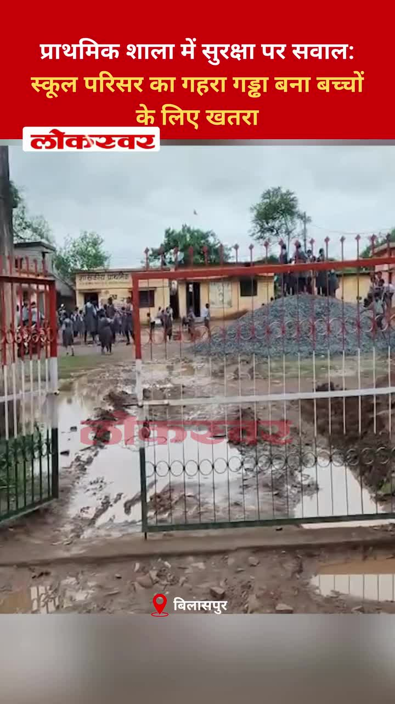
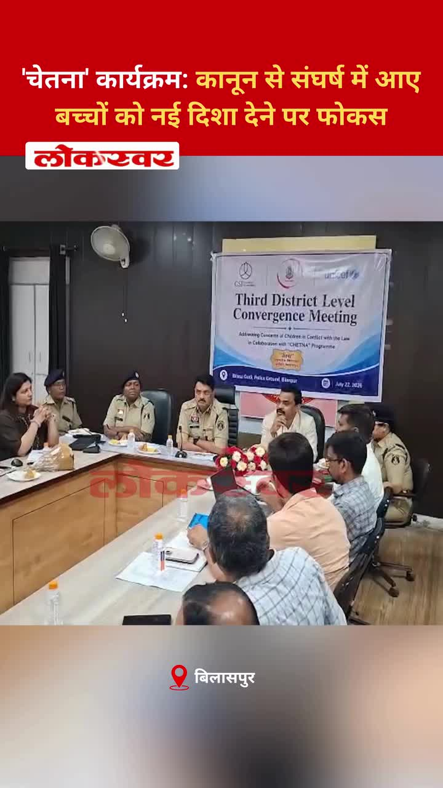
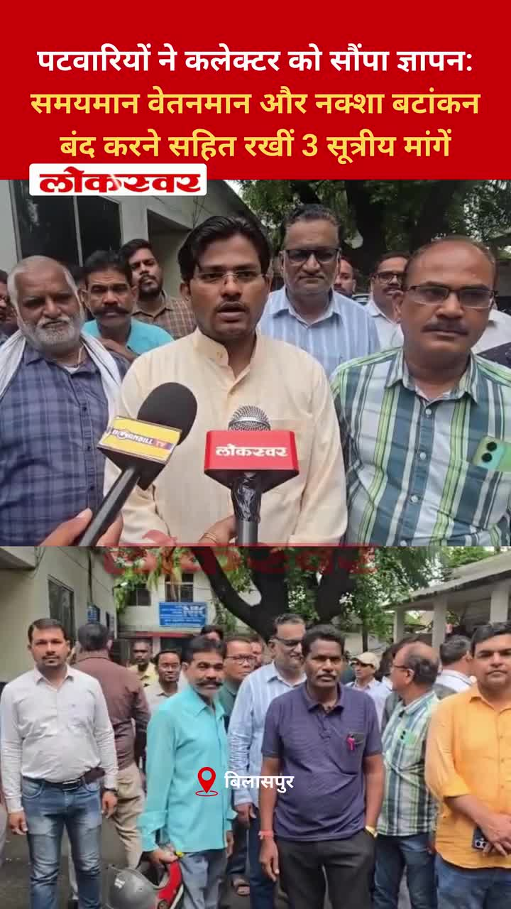
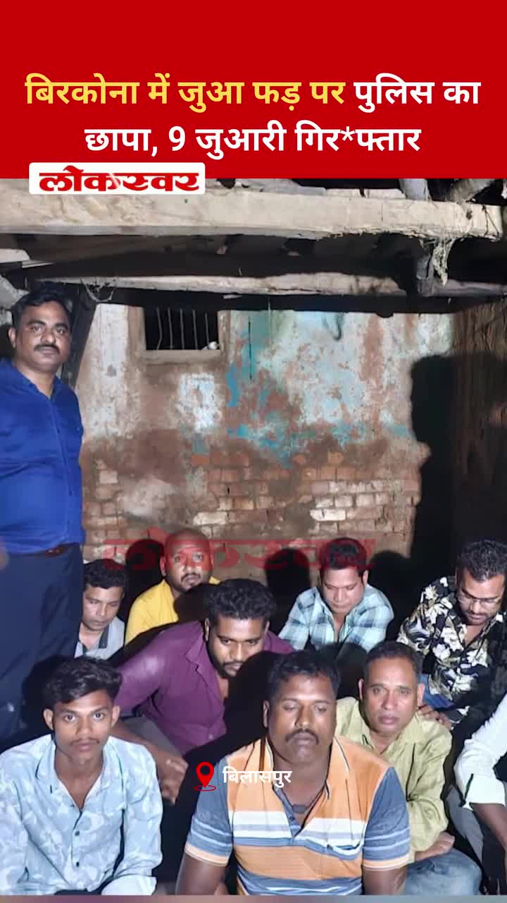
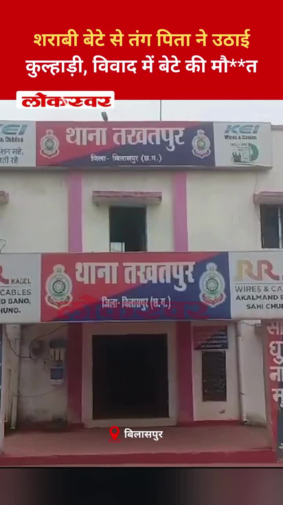
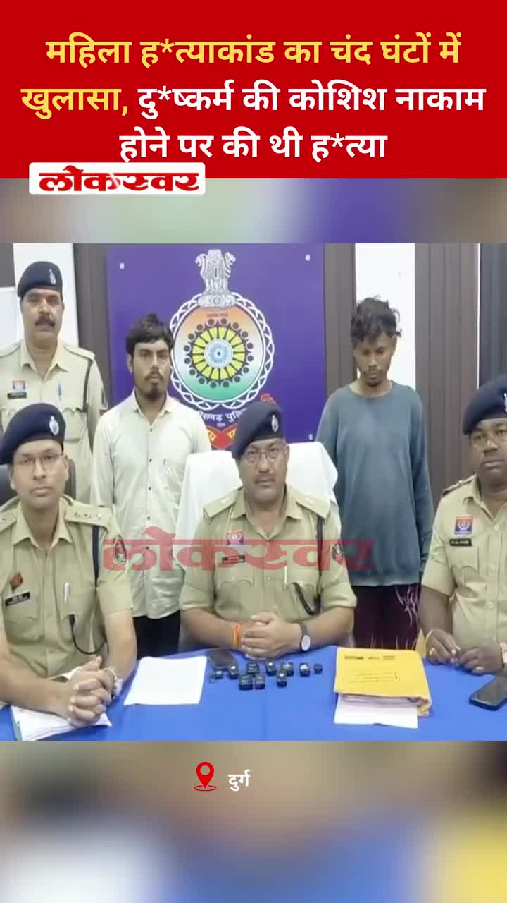

Bilaspur News Hub
1
BUSINESS
4
EDUCATION
3
EVENT
20
GOVERNMENT
1
HEALTH
1
INFRASTRUCTURE
48
INSTAGRAM NEWS
7
NEWS
2
OTHER
14
POLICE
1
RAILWAY
4
SOCIAL
6
YOUTUBE VIDEOS
BUSINESS1

The Hitavada · Scraped: 2026-07-23 08:17:21
Former President Trump announced new tariffs on generic drugs, phased to protect domestic pharma interests. The policy could impact drug pricing and global import patterns.
EDUCATION4

Nai Dunia Bilaspur · Published: Thu, 23 Ju | Scraped: 2026-07-23 05:09:44
बिलासपुर विश्वविद्यालय में एक प्रमुख पेपर लीक के कारण नवीनतम परीक्षा को रद्द कर दिया गया है, जिससे छात्रों में हंगामे की स्थिति पैदा हो गई है। छात्र पारदर्शिता सुनिश्चित करने के लिए लीक रिपोर्ट को सार्वजनिक करने की मांग कर रहे हैं।

Nai Dunia Bilaspur · Published: Thu, 23 Ju | Scraped: 2026-07-23 05:09:44
बिलासपुर के स्कूलों ने आवारा कुत्तों से होने वाले खतरों को दूर करने के लिए एक सुरक्षा मानक संचालन प्रक्रिया जारी की है, जिसमें छात्रों और कर्मचारियों के लिए उपाय शामिल हैं। एसओपी में बच्चों की सुरक्षा सुनिश्चित करने के लिए अभिभावकों की विशिष्ट जिम्मेदारियाँ भी निर्धारित की गई हैं।

The Hitavada · Scraped: 2026-07-23 11:51:54
A student's perseverance was recognised with an award for academic excellence. The honour highlights dedication and hard work in studies.

Guru Ghasidas Vishwavidyalaya · Published: 2026-07-23 | Scraped: 2026-07-23 11:51:54
EVENT3

Nai Dunia Bilaspur · Published: Wed, 22 Ju | Scraped: 2026-07-22 15:29:21
Intense rainfall has lashed the Bilaspur division, causing severe waterlogging and disruption. The evening showers intensified the situation, raising concerns among residents. Authorities are monitoring the situation and advising people to avoid low-lying areas.

The Hitavada · Scraped: 2026-07-23 08:17:21
The Commonwealth Games start today with India focusing on boxing and athletics to win medals. Athletes are preparing for intense competition across multiple disciplines.

The Hitavada · Scraped: 2026-07-23 08:17:21
मानसून के दौरान बाढ़ और पहुंच की समस्याओं के कारण वन्यजीव अभयारण्यों में पर्यटन प्रभावित हुआ है। पर्यटकों और अधिकारियों ने मौसमी चुनौतियों के बावजूद पर्यटन को बनाए रखने के लिए वैकल्पिक रणनीतियों पर विचार किया है।
GOVERNMENT20
.jpg)
Nai Dunia Bilaspur · Published: Wed, 22 Ju | Scraped: 2026-07-22 13:18:22
The husband carried his wife to officials, saying their house was washed away by rain and they now have no shelter. He appealed for immediate relief and a place to stay.

Lokswar · Published: Wed, 22 Ju | Scraped: 2026-07-22 13:18:22
Collector Sanjay Agarwal called for speeding up revenue operations and resolving cases within deadlines. The meeting stressed efficiency and timely delivery of public services.

CG Wall · Published: Wed, 22 Ju | Scraped: 2026-07-22 15:29:21
Former MLA Shailesh Pandey criticized the political culture, asking how ministers can be made if they only answer questions. He alleged that ministerial politics, not public voice, drives decisions in Bilaspur. His remarks have sparked debate among local leaders.

BREAKINGCollector issues ultimatum on revenue work / कलेक्टर ने राजस्व काम में ढिलाई पर अल्टीमेटम दिया
CG Wall · Published: Wed, 22 Ju | Scraped: 2026-07-22 17:10:03
बिलासपुर जिले में लंबित राजस्व प्रकरणों और शासन की प्राथमिकता वाली योजनाओं की धीमी प्रगति पर कलेक्टर ने अफसरों को समयसीमा दी है और ढिलाई बर्दाश्त नहीं की जाएगी।

Nai Dunia Bilaspur · Published: Thu, 23 Ju | Scraped: 2026-07-22 18:57:20
IG took charge after a snake bite compensation scam was uncovered, where fake deaths were reported to embezzle millions. The investigation aims to prevent errors and recover misappropriated funds.

Nai Dunia Bilaspur · Published: Thu, 23 Ju | Scraped: 2026-07-23 05:09:44
छत्तीसगढ़ हाई कोर्ट ने फैसला सुनाया कि माँ का अपने बच्चे को अन्य लोगों द्वारा कम छुए जाने की इच्छा रखना मानसिक क्रूरता नहीं है। यह निर्णय माता-पिता की संवेदनशीलता को सख्त संपर्क नियमों पर प्राथमिकता देता है।

Nai Dunia Bilaspur · Published: Thu, 23 Ju | Scraped: 2026-07-23 08:17:21
बाल संप्रेक्षण गृह में हुई हत्या ने परिवारों को मुआवजा और संविदा नौकरी की मांग को लेकर प्रदर्शन करने के लिए मजबूर किया। अधिकारियों द्वारा उनकी मांगों को स्वीकार करने के बाद विरोध प्रदर्शन समाप्त हो गया।

Nai Dunia Bilaspur · Published: Thu, 23 Ju | Scraped: 2026-07-23 08:17:21
नौ साल से जेल में बंद एक आरोपी की अपील में देरी के कारण छत्तीसगढ़ हाईकोर्ट ने उसके वकील को बदल दिया और लीगल एड सेवाओं की कार्यप्रणाली पर नाराजगी जताई। अदालत ने अंडरट्रायल्स के लिए समयबद्ध न्याय सुनिश्चित करने पर जोर दिया।

Nai Dunia Bilaspur · Published: Thu, 23 Ju | Scraped: 2026-07-23 11:51:54
The expansion of the Patwari Association building in Mangla is stalled due to land allocation issues. Officials are now considering a 0.040‑hectare plot to resolve the deadlock.

Lokswar · Published: Thu, 23 Ju | Scraped: 2026-07-23 11:51:54
Jal Sansadhan Vibhag warned that Mini Mata Banga dam near Machadolli will release water if levels keep rising during monsoon. The move aims to prevent flooding and protect downstream communities.
Lokswar · Published: Thu, 23 Ju | Scraped: 2026-07-23 11:51:54
Meteorological authorities issued a red alert warning of intense rainfall, thunder and lightning across Chhattisgarh for the next two days. Residents are urged to stay indoors and carry umbrellas if they must go out.

The Hitavada · Scraped: 2026-07-23 11:51:54
The state cabinet has formed a committee to oversee fertiliser supply distribution. The move aims to ensure timely availability and curb irregularities in the sector.
BREAKINGRahul says students’ demands are fully legitimate / राहुल ने छात्रों की मांगों को पूरी तरह वैध बताया
The Hitavada · Scraped: 2026-07-23 08:17:21
Congress leader Rahul Gandhi asserted that the students’ demands are fully legitimate, supporting their cause. His statement comes amid ongoing protests by student groups. The remark adds political pressure on the government to address the issues.
The Hitavada · Scraped: 2026-07-23 08:17:21
A heated debate over NEET erupted in Parliament as the Opposition insisted on Education Minister Pradhan’s resignation. The government has agreed to hold a discussion to address the concerns. The issue continues to dominate the legislative agenda.
The Hitavada · Scraped: 2026-07-23 08:17:21
Kalyan Banerjee of the TMC was suspended from the Lok Sabha after using offensive remarks toward women members. The suspension reflects the House’s strict stance on gender‑based abuse. The incident has sparked debate over parliamentary conduct.
Ram temple trust defers CEO selection by a month / राम मंदिर ट्रस्ट ने सीईओ चयन एक महीने के लिए टाला
The Hitavada · Scraped: 2026-07-23 08:17:21
The trust managing the Ram temple postponed the CEO appointment by a month, citing further evaluation. The delay may affect the project's administrative setup.
Easy News · Scraped: 2026-07-22 13:18:22
Former MLA Shailesh Pandey demanded MLA Amar Agarwal's resignation, questioning why people's voices are muted in the assembly. He noted Agarwal has asked zero questions in the past two and a half years.

G News Bilaspur · Published: 2026-07-22 | Scraped: 2026-07-22 15:29:21
Families displaced by floods in Bilaspur are still waiting for government compensation. The delay has caused hardship and uncertainty for the affected households. Authorities have promised assistance but disbursement remains pending.

G News Bilaspur · Published: 2026-07-22 | Scraped: 2026-07-22 15:29:21
The Bilaspur Municipal Corporation has introduced a novel initiative aimed at improving civic services. Details of the program highlight community involvement and innovative solutions. Officials say it will enhance urban development and citizen welfare.

G News Bilaspur · Published: 2026-07-22 | Scraped: 2026-07-22 15:29:21
The Chhattisgarh cabinet approved a 10% reservation for Agniveers in third category government jobs. This decision aims to support ex-servicemen and provide them employment opportunities. The move is expected to benefit many Agniveers seeking stable careers.
HEALTH1

Lokswar · Published: Wed, 22 Ju | Scraped: 2026-07-22 13:18:22
New Horizon Dental College held a free dental health camp at Quro Group of Schools, screening 135 people. The event aimed to raise oral health awareness in Bilaspur.
INFRASTRUCTURE1

The Hitavada · Scraped: 2026-07-23 08:17:21
डिवनल आयुक्त के परिसर में पार्किंग की अराजकता और गड्ढे वाली सड़कें वहां की खराब बुनियादी ढांचे की स्थिति को उजागर करती हैं। यह स्थिति बेहतर रखरखाव और सुनियोजित योजना की आवश्यकता को दर्शाती है।
INSTAGRAM NEWS48
जंतर-मंतर पर एक छात्र प्रदर्शन के दौरान, कुछ सुरक्षा कर्मी ड्यूटी पर तैनात थे, लेकिन उनमें से कुछ के पास नाम के बैज नहीं थे, जिससे जवाबदेही को लेकर चिंताएँ बढ़ गई हैं। अधिकारियों से इस चूक की जाँच करने की उम्मीद की जा रही है।
Students and various social organizations united in Bilaspur to stage a protest, demanding action on an unspecified issue. The demonstration highlighted growing public discontent and called for immediate government response.
A young man was found dead under suspicious circumstances near Kalibadi Chowk in Raipur, sparking panic among locals. Police have launched an investigation to determine the cause of death and identify the victim.
Amit Baghel, the leader of Chhattisgarh Kranti Sena, was freed from jail after eight months and is set to re-enter state politics. His release has sparked discussions about his future role in regional political dynamics.
A landslide has once again blocked the Bilaspur-Solan border road near Kard Panchayat, with a live video of the incident going viral. The closure disrupts travel and raises concerns about road safety in the region.

🌹 || जय माँ नैना देवी || 🌹आज के दिव्य दर्शन | दिनांक: [22.07.2026]"ऊंचे पहाड़ों वाली, भक्तों के दुखों को हरने वाली,माँ नैना देवी के पावन चरणों में कोटि-कोटि प्रणाम।"माँ के सुंदर स्वरूप के दर्शन कीजिए और अपने दिन की मंगलमयी शुरुआत कीजिए। करुणामयी माँ आपकी हर जायज मनोकामना पूरी करें।👉 कमेंट में 'जय माता दी' लिखें और इस दिव्य दर्शन को अपनों के साथ भी शेयर करें। 🙏❤️ by @bilaspur_today_news

प्राथमिक शाला में सुरक्षा पर सवाल: स्कूल परिसर का गहरा गड्ढा बना बच्चों के लिए खतरा #BilhaNews #SchoolSafety #ChildrenSafety #Negligence #ChhattisgarhNews #AdministrationAlert #RuralDevelopment #BilhaAssembly #BilaspurNews #PublicSafety by @lokswar.in

'चेतना' कार्यक्रम: कानून से संघर्ष में आए बच्चों को नई दिशा देने पर फोकस #ChetnaAbhiyan #BilaspurPolice #ChhattisgarhPolice #JuvenileJustice #ChildWelfare #SocialReform #YouthEmpowerment #BilaspurNews #ChhattisgarhNews #CGPolice by @lokswar.in

पटवारियों ने कलेक्टर को सौंपा ज्ञापन: समयमान वेतनमान और नक्शा बटांकन बंद करने सहित रखीं 3 सूत्रीय मांगें#PatwariProtest #PatwariStrike #PatwariUnion #CollectorGyanpan #RevenueDepartment #PatwariDemands #ChhattisgarhNews #AdministrationNews #EmployeeProtest #LandRevenue by @lokswar.in
NEET पेपर लीक और छात्रों पर दमन के खिलाफ सड़कों पर उतरा AIDSO, कलेक्टरेट पर बोला हल्ला #NEETPaperLeak #AIDSOProtest #BilaspurProtest #JusticeForNEETStudents #NEETScam #StudentMovement #CancelNEET #BilaspurNews #ChhattisgarhNews #CGBilaspur #EducationSystem by @lokswar.in
A transgender individual was murdered following a dispute with a guru and his disciple in Bilaspur. Police have arrested the accused and are investigating the motive.
Authorities have issued red-orange warnings for heavy rainfall across several districts in Chhattisgarh. Residents are advised to stay cautious and avoid flood-prone areas.

Koni Police conducted a raid on a gambling den in Birkona, apprehending nine individuals involved in illegal gambling activities. The operation highlights ongoing efforts to curb illicit gaming.

In Takhatpur, a father attacked and killed his son with an axe following a heated argument over the son's drinking habit. Police have registered a case and arrested the father.

In Durg, a murder was quickly solved after a woman was killed when a man’s attempted rape was thwarted. The culprit was identified and arrested within hours of the crime.
The post seeks information about an unidentified spot in Korba. It requests anyone with knowledge to please share details.
Followers are asked where they plan to travel during the monsoon rains, featuring local personality Chaurasiya Ji. It's a community poll about rainy‑season destinations.
A celebration marks the NEET results, hosted with Allen coaching institute in Bilaspur. Students and staff commemorate the academic achievement.
National Broadcasting Day on July 23 promotes responsible communication and verified information sharing. The post encourages the public to adopt ethical media practices.
NEWS7

Nai Dunia Bilaspur · Published: Thu, 23 Ju | Scraped: 2026-07-23 08:17:21
<img src="https://img.naidunia.com/naidunia/ndnimg/23072026/23_07_2026-meditheka.jpg" />छत्तीसगढ़ में सरकारी अस्पतालों के निजीकरण, पैथोलॉजी लैब एच.एल.एल. को सौंपने और ठेका प्रथा के खिलाफ स्वास्थ्य कर्मचारियों ने बिलासपुर कलेक्ट्रेट का घेराव किया। संघ ने 35-40% खाली पदों पर सीधी भर्ती, वेतन विसंगति द
.jpg)
Nai Dunia Bilaspur · Published: Thu, 23 Ju | Scraped: 2026-07-23 08:17:21
<img src="https://img.naidunia.com/naidunia/ndnimg/23072026/23_07_2026-bspmousam2326_(1).jpg" />बिलासपुर में बुधवार को दिनभर हुई हल्की फुहारों और हवा में घुली नमी से मौसम सावन जैसा सुहावना हो गया। मौसम विभाग ने मानसून द्रोणिका और चक्रवाती परिसंचरण के प्रभाव से अगले 24 घंटों में मध्य छत्तीसगढ़ में भा

Lokswar · Published: Thu, 23 Ju | Scraped: 2026-07-23 08:17:21
<p>(भूपेंद्र सिंह राठौर ) : बिलासपुर में हालिया मूसलाधार बारिश के बाद शहर के कई इलाकों में जलभराव की तस्वीरें सामने आईं। इसका असर दक्षिण पूर्व मध्य रेलवे के बिलासपुर रेल मंडल के कुछ हिस्सों और रेलवे यार्ड पर भी देखने को मिला। हालांकि रेलवे का कहना है कि मौजूदा हालात से सबक लेते हुए …</p>
<p>Th

The Hitavada · Scraped: 2026-07-23 11:51:54
The Hitavada · Scraped: 2026-07-23 11:51:54
The Hitavada · Scraped: 2026-07-23 11:51:54

The Hitavada · Scraped: 2026-07-23 11:51:54
OTHER2

G News Bilaspur · Published: 2026-07-22 | Scraped: 2026-07-22 15:29:21
A concise prime news update for Bilaspur highlights the day's top stories on July 22, focusing on key local events and announcements.

G News Bilaspur · Published: 2026-07-22 | Scraped: 2026-07-22 17:10:03
यह एक समाचार बुलेटिन है जिसमें 22 जुलाई 2026 को बिलासपुर के लिए पूर्वानुमानित समाचार स्थिति का उल्लेख है।
POLICE14

Nai Dunia Bilaspur · Published: Wed, 22 Ju | Scraped: 2026-07-22 13:18:22
After a breakup, a man hacked his ex-girlfriend's WhatsApp and made her private videos viral. The incident has caused outrage and police are investigating the case.

Lokswar · Published: Wed, 22 Ju | Scraped: 2026-07-22 13:18:22
Durg police raided River Road, seizing 600 narcotic tablets and arresting a Uttar Pradesh suspect. The operation underscores ongoing efforts to stop illegal drug trafficking.

Nai Dunia Bilaspur · Published: Wed, 22 Ju | Scraped: 2026-07-22 15:29:21
A young man was caught trying to purchase alcohol using counterfeit Rs 500 notes in Chhattisgarh. Police seized four fake notes and arrested him. The incident highlights ongoing concerns about fake currency circulation.

CG Wall · Published: Wed, 22 Ju | Scraped: 2026-07-22 15:29:21
The Bilaspur police have introduced a comprehensive roadmap to safeguard children, focusing on protection, rehabilitation, and a brighter future. This initiative aims to address the needs of children in conflict with law and provide them better opportunities.

Lokswar · Published: Wed, 22 Ju | Scraped: 2026-07-22 15:29:21
A young man was taken into preventive police custody after posting a photo of a lighter disguised as a pistol on social media. Authorities acted to curb potential panic and maintain law and order. The incident highlights concerns over misuse of online platforms.

CG Wall · Published: Wed, 22 Ju | Scraped: 2026-07-22 17:10:03
सिरगिट्टी के गोल्डन स्टे होटल में ओयो की आड़ में कीटनाशक और नकली खाद का भंडारण किया जा रहा था, जिससे 14 हजार लीटर जब्त किया गया और जाँच शुरू की गई।

CG Wall · Published: Wed, 22 Ju | Scraped: 2026-07-22 17:10:03
रतनपुर थाना क्षेत्र में चाकू लहराकर राहगीरों में दहशत फैलाने वाले अपराधी को पुलिस ने कड़ी कार्रवाई करते हुए गिरफ्तार कर लिया और उसे हथकड़ी पहनाकर वापस भेजा।

CG Wall · Published: Wed, 22 Ju | Scraped: 2026-07-22 18:57:20
A tractor overturned in Hirri police station area, killing two laborers. The negligent driver was arrested and sent to jail following the fatal accident.

Nai Dunia Bilaspur · Published: Thu, 23 Ju | Scraped: 2026-07-23 11:51:54
Raiders sealed an Oyo hotel in Bilaspur’s Sirgitti following suspicious activities. The operation underscores efforts to curb illegal operations in the area.

Lokswar · Published: Thu, 23 Ju | Scraped: 2026-07-23 11:51:54
Chakrabhatha police detained an elderly man carrying 40 bottles of illicit liquor on a main road, allegedly for sale. The bust underscores ongoing efforts against illegal alcohol trade.
Lokswar · Published: Thu, 23 Ju | Scraped: 2026-07-23 11:51:54
A car traveling at high speed collided with a tree on Bhilai’s Central Avenue Road early Thursday, killing two young passengers instantly. The tragedy highlights the dangers of reckless driving.
The Hitavada · Scraped: 2026-07-23 11:51:54
A protest near Rajiv Bhawan turned violent, leaving 16 police personnel injured. Authorities are investigating the incident and have urged calm among residents.
The Hitavada · Scraped: 2026-07-23 08:17:21
A police officer on security duty during the Amarnath yatra was killed when bike‑borne terrorists opened fire in Anantnag. The incident highlights ongoing militant threats in the region. Authorities have launched a manhunt for the attackers.
The Hitavada · Scraped: 2026-07-23 08:17:21
The Nagpur Municipal Corporation’s Nuisance Detection Squad filed 49 cases for littering to improve city cleanliness. The action aims to deter environmental violations and raise civic awareness.
RAILWAY1
.jpg)
Nai Dunia Bilaspur · Published: Thu, 23 Ju | Scraped: 2026-07-23 05:09:44
भारतीय रेलवे ने रायपुर-बिलासपुर-कोरबा मार्ग पर चार पहले रद्द की गई MEMU ट्रेनों को बहाल कर दिया है, जिससे यात्रियों को राहत मिली है। यह निर्णय यात्रियों के विरोध के बाद लिया गया है, जिससे इस महत्वपूर्ण गलियारे पर सेवा जारी रहेगी।
SOCIAL4
BREAKINGProtest ends after 10 days, compensation and job agreed in chowkidar murder / चौकीदार हत्याकांड: 10 दिन बाद धरना समाप्त, 11.50 लाख मुआवजा व नौकरी पर बनी सहमति
Lokswar · Published: Thu, 23 Ju | Scraped: 2026-07-23 11:51:54
After ten days of agitation, protesters agreed to end the sit‑in following a settlement that includes ₹11.50 lakh compensation and a job for the victim’s family. The case involved the killing of Bal Sanchar Grih chowkidar Narendra Khande.
CJP urges activist Wangchuk to end fast, says agitation will continue / सीजेएस ने वांगचुक से उपवास समाप्त करने का आग्रह किया, कहा आंदोलन जारी रहेगा
The Hitavada · Scraped: 2026-07-23 08:17:21
The Campaign for Justice and Peace (CJP) called on activist Wangchuk to call off his hunger strike, warning that the protest will persist without him. The organization emphasized the broader cause must keep momentum. The appeal highlights ongoing tensions surrounding the movement.
CJP protesters continue sit-in at Jantar Mantar / सीजेएस प्रदर्शनकारी जंतर मंतर पर धरना जारी
The Hitavada · Scraped: 2026-07-23 08:17:21
The Campaign to Justice People (CJP) resumed its sit-in at Jantar Mantar demanding justice. The protest continues amid calls for policy changes and accountability.
BREAKINGCheap intoxication tablets quietly gain ground in rural areas / ग्रामीण इलाकों में सस्ती नशीली गोलियों का प्रवेश जारी
The Hitavada · Scraped: 2026-07-23 08:17:21
ग्रामीण इलाकों में सस्ती नशीली गोलियों की आसान उपलब्धता से गंभीर स्वास्थ्य खतरे पैदा हो रहे हैं। अधिकारी इस प्रवृत्ति पर लगाम लगाने और नियंत्रण उपायों को मजबूत करने की अपील कर रहे हैं।
YOUTUBE VIDEOS6


GRAND NEWS BILASPUR: FINAL NEWS 23.07.2026 MORNING @News18MPChhattisgarh @IBC24InNews @ZeeNews ...


Authorities uncovered a dangerous stockpile of illegal pesticides hidden in a hotel's parking area, raising safety concerns and prompting a police investigation.


Young activists took to the streets demanding clearer pathways for students' career prospects amid rising uncertainty. The protest highlights youth anxiety over education and jobs.


District collector Sanjay Agarwal chaired a meeting with revenue officials to discuss pending land cases and improve service delivery. Key procedural reforms were outlined.


Latest evening bulletin from Bilaspur Grand News covers top updates as of July 22, 2026, including regional developments and community news.


लगातार हो रही भारी बारिश से बिलासपुर में खेतों में पानी भरने की आशंका बढ़ गई है, जिससे फसलों को नुकसान हो सकता है और किसानों की मुश्किलें बढ़ गई हैं।